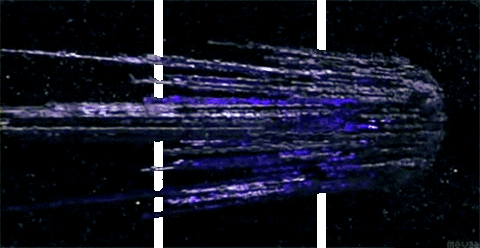

Le prophète Nominoë II est un ingénieur qui va inventé une divinité permettant de construire le vaisseau le Belphégor comme une Eon. C'est le système d'arme le plus sophistiqué de l'univers car basée sur l'ADN du prophète comme assemblage depuis les Atlantes et leurs technologies des Grands Anciens.
Le pouvoir du Belphégor est d'ordonnée l'inquisition religieuse d'une planète et son annihilation par terraformation pour recycler la graine en son centre. Là ou le Belphégor apparait invoqué par le prophète sur un monde, c'est la fin programmée de la planète et la hantise de l'Eon. Pouvoir demesuré du prophète son vaisseau le suit comme son ombre, c'est une forteresse et ville volante, une véritable usine. On reconnait la signature du prophète à travers le pattern de la méduse et la forme du vaisseau. Une attaque aquatique mortel pour l'homme de technologie atlante.
Le Belphégor est un exosquelette du prophète fabriquée à base de son propre ADN qui a évolué en nanite ce qui fait que c'est de la technologie de robotique neuromorphique. C'est le code génétique pour contrôler le système d'arme, mais pas seulement, il y a une protection supplémentaire pour les citadelles à travers la cryptologie et le Narkanta. Sans le code génétique, ni la langue impossible d'accéder au terminal de contrôle du vaisseau.
Le Belphégor est un vaisseau de classe Titan, un vaisseau de type capitale comme dans EVE Online et l'Avatar, mais également intègre une conception de Black Ops pour la furtivité. A quoi ressemble le Belphégor? Son image est connu, c'est le legendaire vaissseau réplicateur à base de nanite de Stargate. Il peut déployer des filaments en milliers de kilomètres pour stabiliser le vaisseau en orbite basse sur une planète.

Bien sur des pillards, des charognards et des faux prophètes tel que Jésus de Nazareth vont tenter de s'approprier la technologie, les franc-maçons également lorgne sur la technologie en particulier pour faire évoluer le légendaire "Hollandais Volant". Sauf que Nominoë II est un militaire et ingénieur de l'armement qui s'y connait en cyberdéfense.
Ils tenteront de faire plier Nominoë II et d'avorter la création du Belphégor ou de faire du chantage pour fournir les clés de la technologie et le contrôle du Belphégor. Ce que le prophète luttera, et ce qui lui vaudra de finir en tant que grand martyr, bien plus que le personnage de Jésus de Nazareth. Des milliards d'individu veulent la mort de Nominoë II car il va annihiler la planète et détruire le christianisme et sa corruption, tant que son dogme du culte des mages et la trinité ou dieu c'est donné un fils est une abomination. Avec l'apparition du Belphégor, toutes les églises et cathédrales vont être détruite ainsi que les principales villes chrétiennes en punitence. Pour éviter d'avoir une armée de mort-vivant, les cimétières seront profanés et les âmes moissonnées par le Belphégor. La fin de la chrétienté et des saints qui n'est qu'une façade. Le tombeau du Christ sera détruit à Jérusalem, mais Israel sera préservé, Nominoë II est un parent et héritier d'Adolf Hitler et ne persecutera par les juifs qui ont déjà donné par les nazis. La graine Jehovah ne sera pas détruite en tant que hébergement, mais envoyé dans un mausolée sur Pluton à l'isolement.
Ce qui est du christianisme, l'hébergeur sera détruit et l'immortalité du Christ annulé, la religion démantelé. Mais cela ne s'arrête pas à ça, et il faut s'attaquer à ceux qui tiennent les ficelles et manipule en tant que pion le Christ tel que des franc-maçons. Les prophètes de vulgaires outils? Nominoë II va prouver de son pouvoir qu'il va détruire également les charlatans franc-maçons à sa source après le christianisme qui voue une haine pour le dragon asiatique dont il a fait alliance.
La Fin d'un temps, et la légende du prophète va commencer à travers l'invocation la plus puissante jamais réalisée.